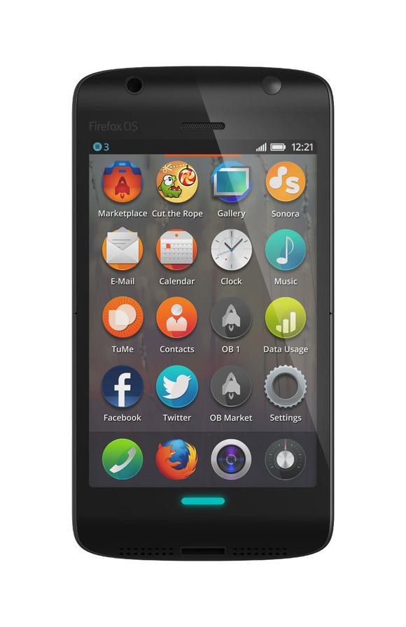
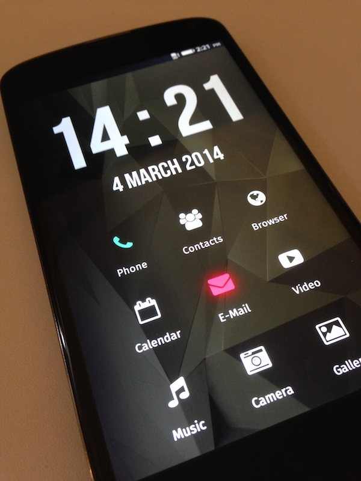

FirefoxOS
Building a home screen
Kevin Grandon
@kevining
What is FirefoxOS?
Where is it?
- 12 smartphones
- 13 operators
- 24 countries
Target Audiennce
- Emerging Markets
- First time smartphone users
The Home Screen
1.0 - 1.4 home screen

Riverscreen - custom home screen

Replaceable Home Screens
Thanks!
Kevin Grandon
@kevining